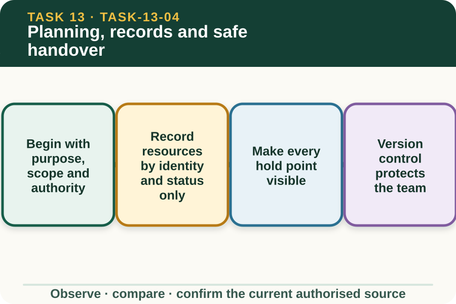

Classroom presentation · 8 slides
Planning, records and safe handover
Task 13 · 1 of 8
Planning, records and safe handover
Document purpose, resources, checks, findings, unresolved issues and handover without creating a live-work procedure.

Speaker notes
Teaching move (web-deck purpose): Use the module visual and the fictional worked example to move students from observation to a source-led decision. Ask students to name the evidence, the authority gap and the next safe communication step. Misconception and help: Conflicting document identifiers require a controlled matching set. One current set, confirmed by the source owner. Applied action: Prepare a controlled fictional handover. Audit a teacher-supplied document pack, mark matching revisions, list open status fields and write a closed-loop handover. Leave every practical release field blank and do not copy controlled package content. Boundary: This supplementary learning draws on mapped AHCINF205 concepts. Current signed TAS and RTO documents control cohort delivery, assessment and competency decisions; current workplace procedures, supervision and authorised sources control real work. [Sources] - Source basis: AHCINF205 Release 1 preparation, component status, completion and reporting concepts. The approved design, current manufacturer and workplace sources, teacher demonstration and RTO assessment package remain controlling and separate. - Visual visual-task-13-04: Generated locally from accepted Stage 05 module headings; no external image copied. - Course visual manifest: work/pi/visuals/visual-manifest.json
Task 13 · 2 of 8
Map the learning
- Begin with purpose, scope and authority
- Record resources by identity and status only
- Make every hold point visible
Retrieve: A design and component schedule have different revision identifiers. What is the strongest response?
Speaker notes
Teaching move (learning map): Use the module visual and the fictional worked example to move students from observation to a source-led decision. Ask students to name the evidence, the authority gap and the next safe communication step. Misconception and help: Conflicting document identifiers require a controlled matching set. One current set, confirmed by the source owner. Applied action: Prepare a controlled fictional handover. Audit a teacher-supplied document pack, mark matching revisions, list open status fields and write a closed-loop handover. Leave every practical release field blank and do not copy controlled package content. Boundary: This supplementary learning draws on mapped AHCINF205 concepts. Current signed TAS and RTO documents control cohort delivery, assessment and competency decisions; current workplace procedures, supervision and authorised sources control real work. [Sources] - Source basis: AHCINF205 Release 1 preparation, component status, completion and reporting concepts. The approved design, current manufacturer and workplace sources, teacher demonstration and RTO assessment package remain controlling and separate. - Visual visual-task-13-04: Generated locally from accepted Stage 05 module headings; no external image copied. - Course visual manifest: work/pi/visuals/visual-manifest.json
Task 13 · 3 of 8
Notice the evidence
Begin with purpose, scope and authority
A controlled electric-fence plan identifies why work is proposed, the affected system and segment, current design and manufacturer sources, assigned roles, present status and boundaries on what the learner may do. Missing scope or authority prevents meaningful planning.
Use fictional identifiers in the website and link controlled documents by title or approved destination. Do not copy protected student or assessor packages into public learning content.
Record resources by identity and status only
A planning register can list component and equipment identifiers, document references and authorised status. It should distinguish available, verified, unavailable and unresolved rather than treating presence as proof of suitability.
The site does not select products, explain preparation or show practical use. Any mismatch, substitution or unknown condition remains a supervisor decision supported by current authorised sources.
Speaker notes
Teaching move (theory idea 1): Use the module visual and the fictional worked example to move students from observation to a source-led decision. Ask students to name the evidence, the authority gap and the next safe communication step. Misconception and help: Conflicting document identifiers require a controlled matching set. One current set, confirmed by the source owner. Applied action: Prepare a controlled fictional handover. Audit a teacher-supplied document pack, mark matching revisions, list open status fields and write a closed-loop handover. Leave every practical release field blank and do not copy controlled package content. Boundary: This supplementary learning draws on mapped AHCINF205 concepts. Current signed TAS and RTO documents control cohort delivery, assessment and competency decisions; current workplace procedures, supervision and authorised sources control real work. [Sources] - Source basis: AHCINF205 Release 1 preparation, component status, completion and reporting concepts. The approved design, current manufacturer and workplace sources, teacher demonstration and RTO assessment package remain controlling and separate. - Visual visual-task-13-04: Generated locally from accepted Stage 05 module headings; no external image copied. - Course visual manifest: work/pi/visuals/visual-manifest.json
Task 13 · 4 of 8
Use the source boundary
Make every hold point visible
Hold points may involve document conflict, system status, site access, services, surrounding activity, resource status, changed conditions or an unresolved fault. The real plan defines the exact release evidence and authorised person.
A good learning plan shows the hold point before the affected stage and leaves its release field blank. It does not simulate a signature, safety clearance or approval.
Version control protects the team
Electric-fence documents can include design drawings, component schedules, manufacturer information, condition records and work instructions. Each entry needs an identifier and current-status check so a superseded source is not quietly reused.
When versions conflict, stop the plan and ask the authorised owner to withdraw or replace the incorrect copy. Do not merge details from two versions into a third unofficial plan.
Speaker notes
Teaching move (theory idea 2): Use the module visual and the fictional worked example to move students from observation to a source-led decision. Ask students to name the evidence, the authority gap and the next safe communication step. Misconception and help: Conflicting document identifiers require a controlled matching set. One current set, confirmed by the source owner. Applied action: Prepare a controlled fictional handover. Audit a teacher-supplied document pack, mark matching revisions, list open status fields and write a closed-loop handover. Leave every practical release field blank and do not copy controlled package content. Boundary: This supplementary learning draws on mapped AHCINF205 concepts. Current signed TAS and RTO documents control cohort delivery, assessment and competency decisions; current workplace procedures, supervision and authorised sources control real work. [Sources] - Source basis: AHCINF205 Release 1 preparation, component status, completion and reporting concepts. The approved design, current manufacturer and workplace sources, teacher demonstration and RTO assessment package remain controlling and separate. - Visual visual-task-13-04: Generated locally from accepted Stage 05 module headings; no external image copied. - Course visual manifest: work/pi/visuals/visual-manifest.json
Task 13 · 5 of 8
Connect evidence to action
Handover uses states, owners and next evidence
A safe handover separates what is confirmed, what was observed, what remains unresolved, present access and work status, documents used, person controlling the next decision and the evidence needed at review. It avoids the vague phrase all good.
The receiver repeats the segment, status and open hold points through the authorised communication channel. Website practice must not expose real access, security, property or personal information.
Close records without claiming competency
A learning record can show source literacy, hazard recognition and clear written reasoning. It cannot confirm that a real electric fence is safe, that practical work was performed, or that formal evidence requirements have been met.
Only the controlled workplace process closes real work and only the authorised RTO assessment process makes competency judgements. Keep local browser saves labelled as formative rehearsal and teacher-feedback material.
Speaker notes
Teaching move (theory idea 3): Use the module visual and the fictional worked example to move students from observation to a source-led decision. Ask students to name the evidence, the authority gap and the next safe communication step. Misconception and help: Conflicting document identifiers require a controlled matching set. One current set, confirmed by the source owner. Applied action: Prepare a controlled fictional handover. Audit a teacher-supplied document pack, mark matching revisions, list open status fields and write a closed-loop handover. Leave every practical release field blank and do not copy controlled package content. Boundary: This supplementary learning draws on mapped AHCINF205 concepts. Current signed TAS and RTO documents control cohort delivery, assessment and competency decisions; current workplace procedures, supervision and authorised sources control real work. [Sources] - Source basis: AHCINF205 Release 1 preparation, component status, completion and reporting concepts. The approved design, current manufacturer and workplace sources, teacher demonstration and RTO assessment package remain controlling and separate. - Visual visual-task-13-04: Generated locally from accepted Stage 05 module headings; no external image copied. - Course visual manifest: work/pi/visuals/visual-manifest.json
Task 13 · 6 of 8
Retrieve and check
A design and component schedule have different revision identifiers. What is the strongest response?
- Merge the most detailed parts of both documents.
- Mark a document-control hold point and ask the authorised owner for a matching current set.
- Use the newer-looking font as evidence of currency.
Teacher reveal
Correct. The plan remains traceable and does not rely on mixed versions.
One current set, confirmed by the source owner.
Speaker notes
Teaching move (retrieval): Use the module visual and the fictional worked example to move students from observation to a source-led decision. Ask students to name the evidence, the authority gap and the next safe communication step. Misconception and help: Conflicting document identifiers require a controlled matching set. One current set, confirmed by the source owner. Applied action: Prepare a controlled fictional handover. Audit a teacher-supplied document pack, mark matching revisions, list open status fields and write a closed-loop handover. Leave every practical release field blank and do not copy controlled package content. Boundary: This supplementary learning draws on mapped AHCINF205 concepts. Current signed TAS and RTO documents control cohort delivery, assessment and competency decisions; current workplace procedures, supervision and authorised sources control real work. [Sources] - Source basis: AHCINF205 Release 1 preparation, component status, completion and reporting concepts. The approved design, current manufacturer and workplace sources, teacher demonstration and RTO assessment package remain controlling and separate. - Visual visual-task-13-04: Generated locally from accepted Stage 05 module headings; no external image copied. - Course visual manifest: work/pi/visuals/visual-manifest.json Use option-specific feedback after the learner commits to an answer.
Task 13 · 7 of 8
Construct a source-led response
Complete a fictional electric-fence planning and handover brief. Identify purpose, current sources, resource status, hold points, open findings, next owner and evidence still required.
- The fictional purpose and affected segment are…
- The current controlled document set is…
- Resource and system status are… with these gaps…
- The hold points before any practical stage are…
- The observations or findings are… while unresolved issues are…
- The handover owner and next authorised evidence are…
Success criteria
- Uses one matching current document set
- Keeps resource, system and access status distinct
- Shows open hold points and next decision ownership
- Includes no connection, isolation, testing, installation or repair procedure
Speaker notes
Teaching move (guided written response): Use the module visual and the fictional worked example to move students from observation to a source-led decision. Ask students to name the evidence, the authority gap and the next safe communication step. Misconception and help: Conflicting document identifiers require a controlled matching set. One current set, confirmed by the source owner. Applied action: Prepare a controlled fictional handover. Audit a teacher-supplied document pack, mark matching revisions, list open status fields and write a closed-loop handover. Leave every practical release field blank and do not copy controlled package content. Boundary: This supplementary learning draws on mapped AHCINF205 concepts. Current signed TAS and RTO documents control cohort delivery, assessment and competency decisions; current workplace procedures, supervision and authorised sources control real work. [Sources] - Source basis: AHCINF205 Release 1 preparation, component status, completion and reporting concepts. The approved design, current manufacturer and workplace sources, teacher demonstration and RTO assessment package remain controlling and separate. - Visual visual-task-13-04: Generated locally from accepted Stage 05 module headings; no external image copied. - Course visual manifest: work/pi/visuals/visual-manifest.json
Task 13 · 8 of 8
Close the loop
Prepare a controlled fictional handover
Audit a teacher-supplied document pack, mark matching revisions, list open status fields and write a closed-loop handover. Leave every practical release field blank and do not copy controlled package content.
- Name the strongest evidence in the scenario.
- Explain the decision or referral it supports.
- State which current source or authorised person controls real work.
Boundary: This supplementary learning draws on mapped AHCINF205 concepts. Current signed TAS and RTO documents control cohort delivery, assessment and competency decisions; current workplace procedures, supervision and authorised sources control real work.
Speaker notes
Teaching move (exit and application): Use the module visual and the fictional worked example to move students from observation to a source-led decision. Ask students to name the evidence, the authority gap and the next safe communication step. Misconception and help: Conflicting document identifiers require a controlled matching set. One current set, confirmed by the source owner. Applied action: Prepare a controlled fictional handover. Audit a teacher-supplied document pack, mark matching revisions, list open status fields and write a closed-loop handover. Leave every practical release field blank and do not copy controlled package content. Boundary: This supplementary learning draws on mapped AHCINF205 concepts. Current signed TAS and RTO documents control cohort delivery, assessment and competency decisions; current workplace procedures, supervision and authorised sources control real work. [Sources] - Source basis: AHCINF205 Release 1 preparation, component status, completion and reporting concepts. The approved design, current manufacturer and workplace sources, teacher demonstration and RTO assessment package remain controlling and separate. - Visual visual-task-13-04: Generated locally from accepted Stage 05 module headings; no external image copied. - Course visual manifest: work/pi/visuals/visual-manifest.json